Giữ phong cách Glass C. Đã chạy 941 bài kiểm tra PlayMode, 16 kiểm tra UI bổ sung và 5 kiểm tra intro/xin ăn, không có lỗi test. Ảnh trong trang này chụp từ runtime; các bài giải, kéo trả hộp và kiểm tra thang máy được ghi riêng trong báo cáo kiểm thử.
Ability Card — nhỏ, nhẹ và có khoảng nghỉ
Playful · trái tim nhỏ bay chậm từ COghe.
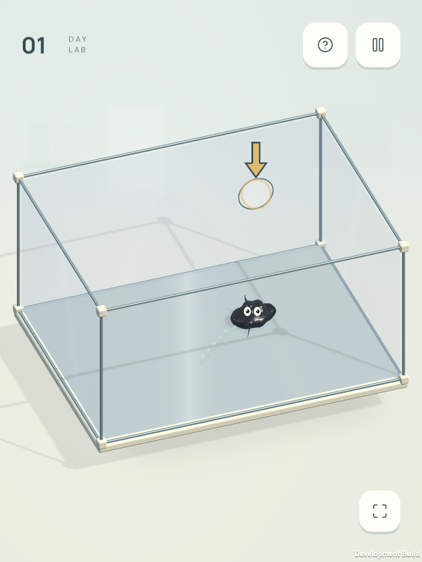
Speedy · vệt ngọc bạc hà theo mặt tiếp xúc thật, chỉ khi bò.
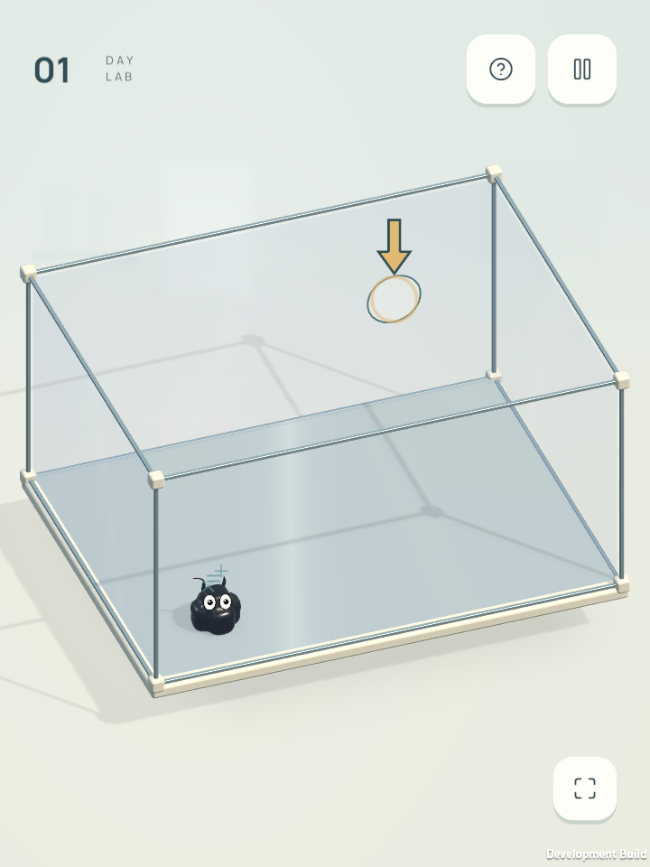
Clever · chữ số và dấu toán bay nhẹ trên đầu.
Hướng dẫn Mint — hoàn thành bằng Done
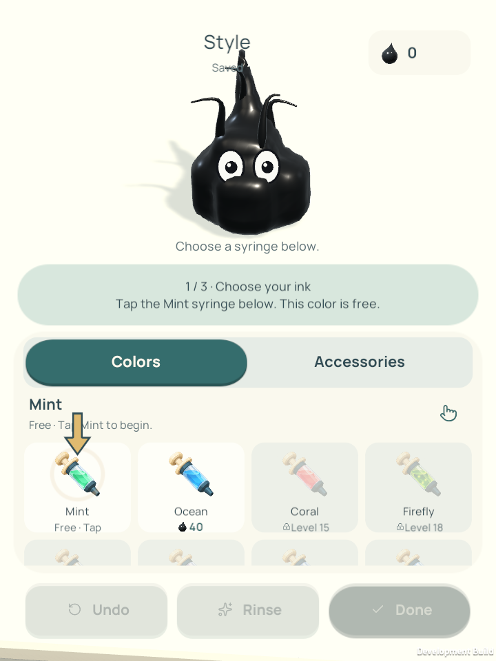
Chọn ống Mint miễn phí.
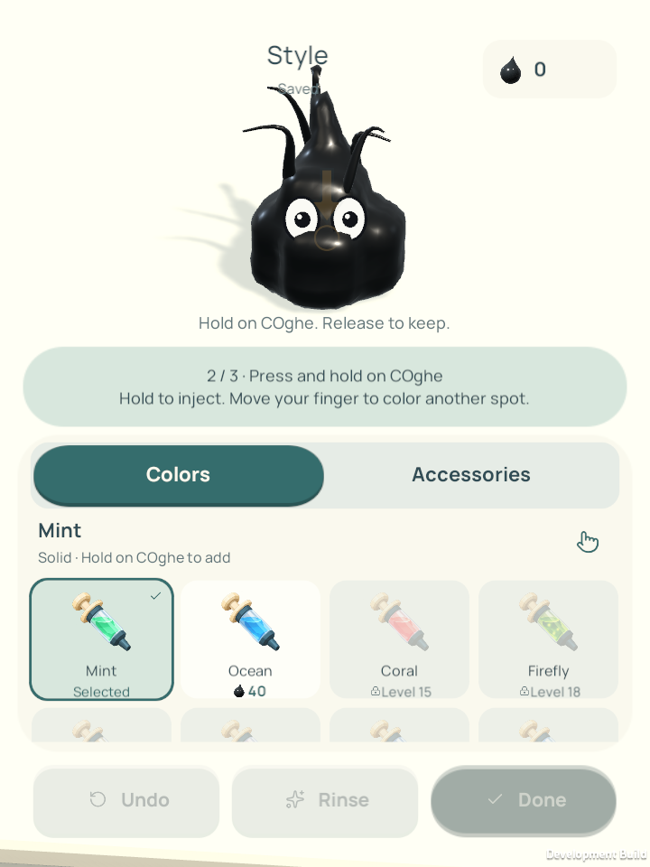
Giữ trên cơ thể để tiêm.
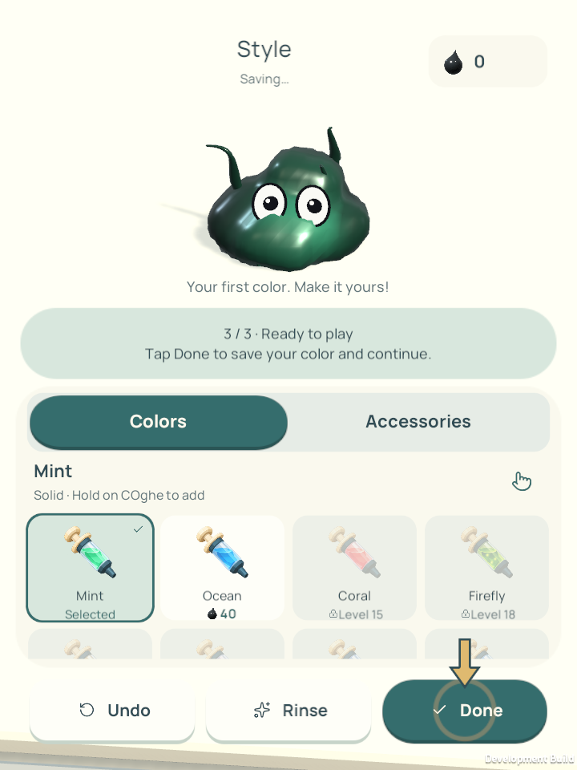
Đã bơm màu, bấm Done để chơi tiếp. Không có Back.
Hình xin ăn và cảnh cuối intro
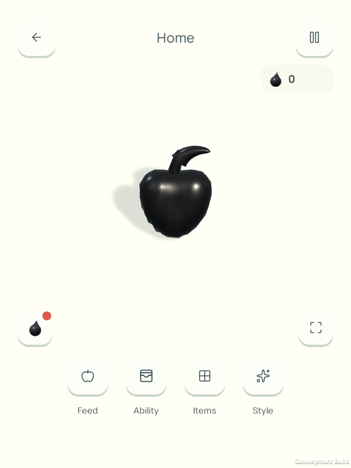
Xin ăn bằng hình quả táo có cuống và lá.
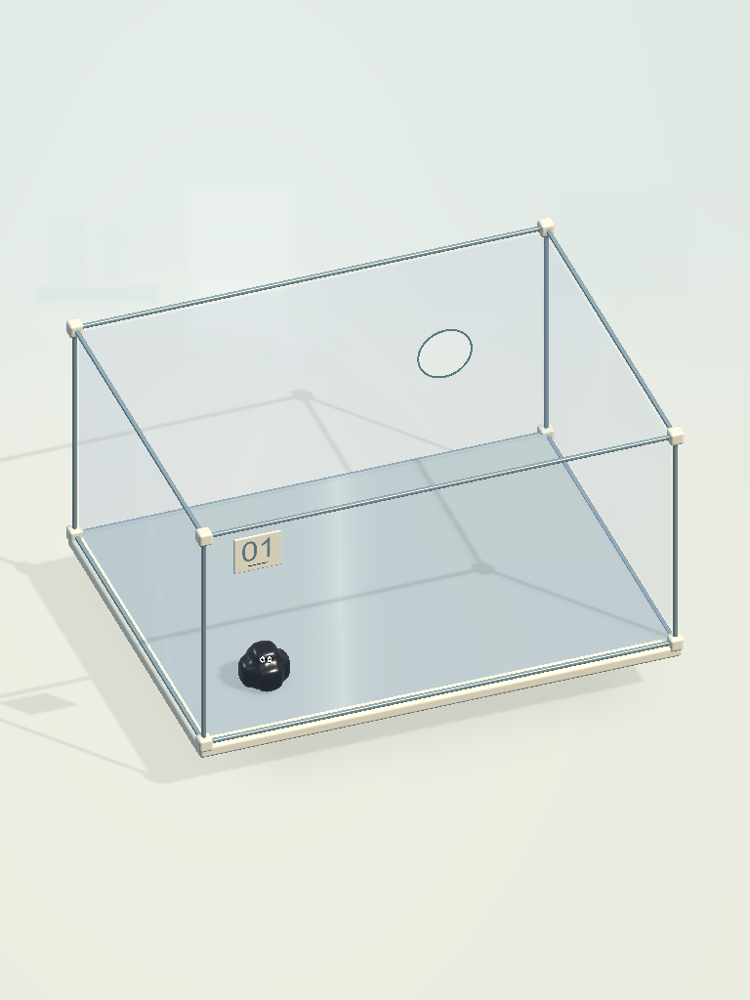
Khung cuối intro dùng chính cảnh màn 1, tỉ lệ iPad.
Chuyển cảnh intro → màn 1
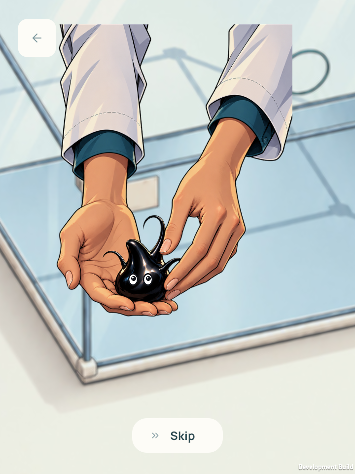
Thu cảnh bàn tay về vị trí bắt đầu.
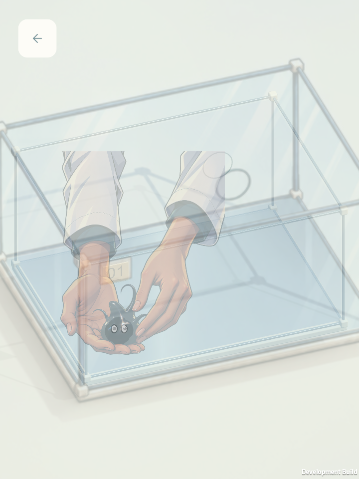
Chuyển mờ sang cảnh Unity, cùng vị trí COghe.
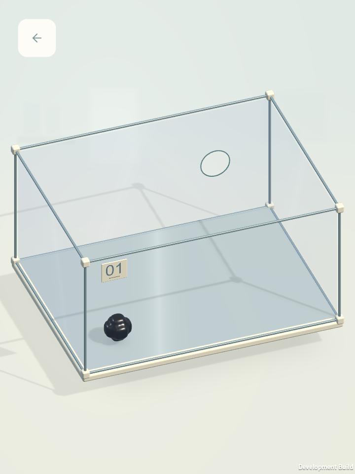
Khung cuối dùng trực tiếp hộp kính của màn 1.
Màn 2 — nhìn từ phía sau
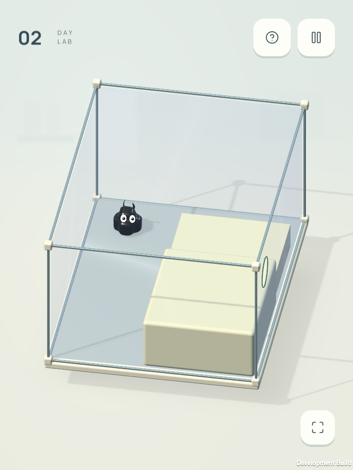
Mặt bục tách lớp hiển thị khỏi kính; giữ nguyên va chạm.
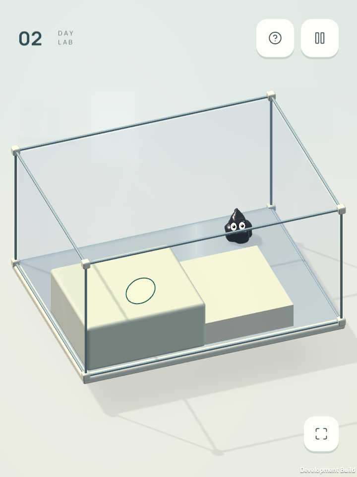
Góc xoay khác để kiểm tra các mặt tiếp giáp.Bản kiểm tra trên Mac. Các ảnh không thay thế phép đo FPS trực tiếp trên iPad/điện thoại.